People
See here for current opportunities to join the team.
The Team
Tim Newbold

Tim is the Principal Investigator of the Global Biodiversity Change group at UCL. He is interested in understanding and predicting global biodiversity changes, and the consequences of biodiversity changes for human societies. Email Tim.
Silvia Ceausu
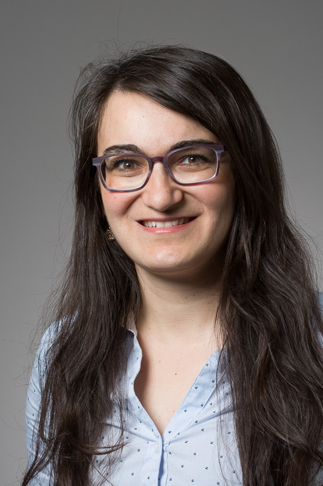Silvia is working on the GCRF-funded TRADE Hub, investigating the impacts of global trade on biodiversity. Email Silvia.
Tania Barychka
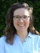Tania is working on our Leverhulme-funded project combining the Madingley General Ecosystem Model with Ecological Neutral Theory to predict the impacts of human activities on the world's terrestrial ecosystems. Email Tania.
Charlie Outhwaite
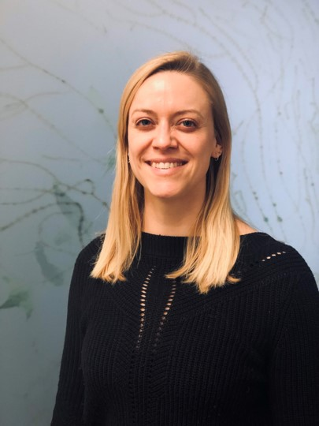Charlie is working on our NERC-funded BIOTA Project looking at interactions between biodiversity change and agriculture. Email Charlie.
Abbie Chapman
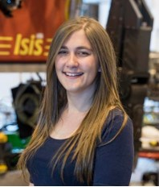Abbie is working on the GCRF-funded SENTINEL Project, investigating biodiversity-agriculture trade-offs in Zambia, Ethiopia and Ghana. Email Abbie.
Georgina Adams
Georgina is now working on the GCRF-funded SENTINEL Project, developing scenarios of future biodiversity change in Zambia, Ghana and Ethiopia. Georgina previously also worked on our Leverhulme-funded Dynamics of African Ecosystems Project. Email Georgina
Lizzie Boakes
Lizzie works on the TRADE Hub and BIOTA Project, investigating the impacts of global trade on biodiversity. Email Lizzie.
Chloe Metcalfe
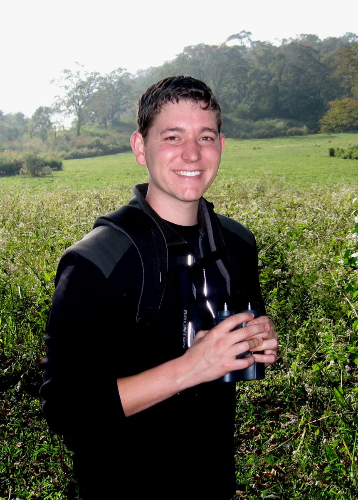Chloe is doing a PhD Project together also with Terry Dawson, funded by the London NERC DTP, investigating the effectiveness of protected areas. Email Chloe.
Gonzalo Albadejo Robles
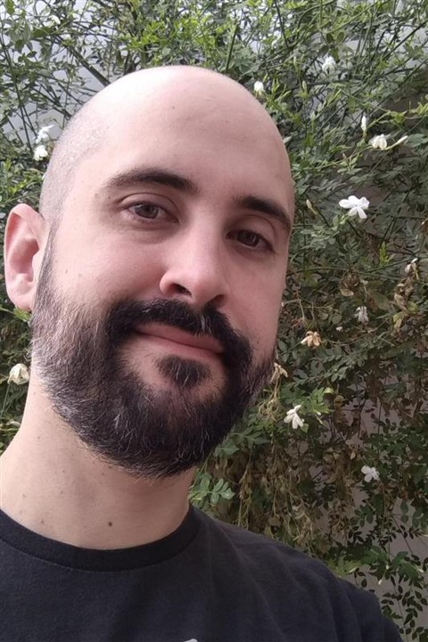Gonzalo is doing a PhD project as part of the EU-funded Inspire4Nature Program. Gonzalo is investigating land use and climate impacts on biodiversity. Email Gonzalo.
Adrienne Etard
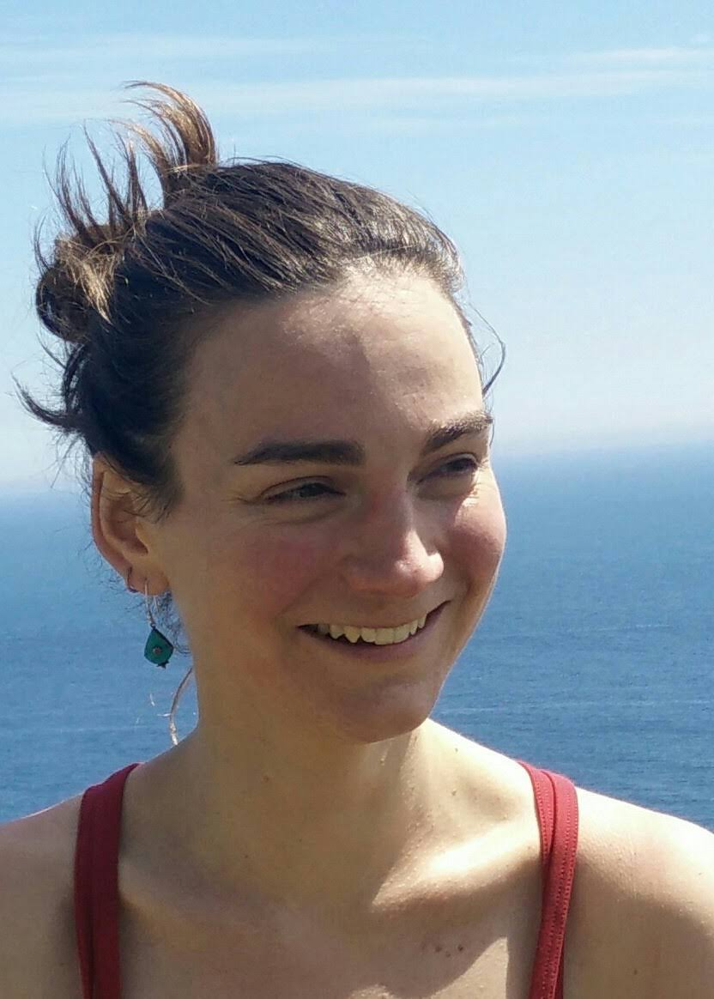Adrienne is doing a Royal Society-funded PhD, investigating how species' traits influence their responses to climate and land-use change. Email Adrienne.
Joe Millard
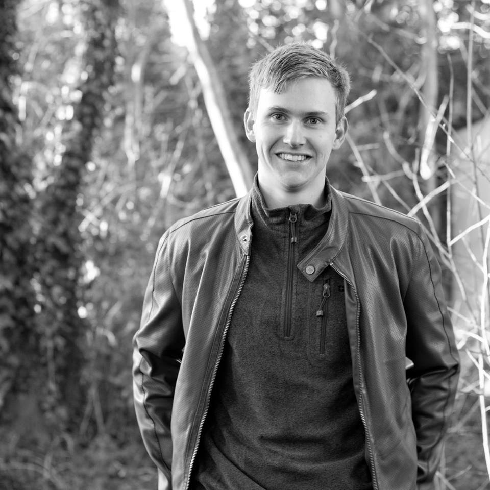Joe is doing a PhD, together also with Robin Freeman at ZSL and Richard Gregory at RSPB, funded by the London NERC DTP, investigating how climate and land use influence pollinator communities. Email Joe.

Jessica Williams (2017 - 2021)
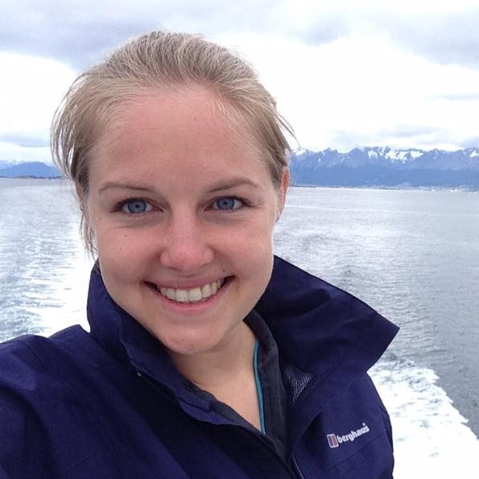Jess did a Royal Society-funded PhD, studying how climate modifies the response of biodiversity to land use.
Rory Gibb (2017 - 2020)
Rory did a PhD, mainly working with Kate Jones, investigating the effect of environmental change on disease risk.
Guilherme Ferreira (2018 - 2019)
I helped to supervise Gee for the last few months of his PhD project, investigating the effectiveness of protected areas in conserving mammal populations in Brazil. Gee passed his viva in July 2019, and his now doing a post-doc at UCL working on the Biome Health Project with Kate Jones
Dingding Liu
Dingding did a masters project with Lizzie, exploring the social impacts of Chinese imports of agricultural commodities.
Sam Bengtsson-Gartner
Sam did a masters project with Silvia, investigating alignment of stakeholder and researcher interests in ecosystem services.
Charlotte Benham
Charlotte did a masters project with Charlie Outhwaite, investigating the impact of landscape natural habitat availability on agricultural biodiversity.
Bjorn Franke
Bjorn did a masters project with Georgina Adams, investigating the effect of animal migrations on ecosystem structure using the Madingley Model.
James Hatry
James did a masters project with Lizzie Boakes, looking at the effect of international trade on biodiversity and social indicators.
Tasmin Alexander (2020)
Tasmin did a masters project, investigating the impact of large-scale land acquisitions on biodiversity.
Peter McCann (2019 - 2020)
Peter did a masters project, investigating the interactions between biodiversity, agriculture and global commodity trade. We are preparing Peter's work for publication.
Rhiannon Osborne-Tonner (2019 - 2020)
Rhiannon did a masters project, looking at how vertebrate diets influence their response to land-use change. Rhiannon's work contributed to a paper we are preparing on species' responses to land-use change.
Susie Cramp (2018 - 2019)
Susie did a masters research project, exploring impacts of land use on the phylogenetic diversity of vertebrates. Susie is now doing a PhD at the University of Western Australia.
Diego Garcia-Vega (2017-2018)
Diego did a masters research project, investigating the impact of land-use change on biodiversity in the world's drylands. Diego's work was published as a paper in Biodiversity & Conservation. Since graduating Diego has done internships with the United Nations, and is now completing another masters degree at Sciences Po in Paris.
James Johnston (2019)
James did an masters project, investigating the impacts of cocoa on tropical biodiversity. James will soon be starting a PhD project at Cambridge University.
Georgie Hislop (2019)
Georgie did a masters project, working on the SENTINEL Project.
Philippa Oppenheimer (2019)
Philippa did a masters project, investigating how biodiversity responses to land use differ among the biomes of the world. Philippa's work formed part of a paper we published in Nature Ecology & Evolution
Louise Sykes (2018)
Lou did a masters research project, exploring whether rare and common species respond differently to land use. Lou's work was published as a paper in Conservation Biology. Lou is now working for the Hampshire Wildlife Trust.
Robyn Kinnersley (2018)
Robyn did a masters research project, investigating responses of European pollinator species to land use. Robyn's work contributed to a paper just accepted for publication.
Sophie Morrill (2017)
Sophie did a masters project with me, exploring how the ecological traits of reptile species influence their responses to land use. Sophie's work contributed to a paper we published in Global Ecology & Biogeography. Sophie now develops Natural History television programmes.
Rungtip Wonglersak (2016)
Rungtip did a masters research project investigating the effects of climate change on ecosystems using the Madingley Model. Rungtip is currently doing a PhD joint between the University of Southampton and the Natural History Museum.
Laura Bentley (2015)
Laura did an internship at UNEP-WCMC, using the PREDICTS Project data to investigate whether responses of species to land use vary depending on trophic level. Laura's work contributed to a paper we published in Functional Ecology. Laura is now doing a PhD at the University of Cambridge.
Martin Jung (2014)
While at UNEP-WCMC, I co-supervised Martin's masters project at the Centre for Macroecology, Evolution and Climate at Copenhagen University. He compared the estimates of the effects of land use made by the models of the PREDICTS Project with new data he collected in Kenya and Tanzania. Martin's work was published as a paper in Animal Conservation. Martin completed a PhD at the University of Sussex, and is now working as a post-doctoral researcher at the International Institute for Applied Systems Analysis in Vienna.
Katie Threadgill (2014)
Katie did an internship at UNEP-WCMC, collating data on biodiversity before and after a land-use change. Katie is now doing a PhD in York University
Rebecca Senior (2013)
Rebecca did an extended internship at UNEP-WCMC, working on various projects. Rebecca's work contributed to the first global PREDICTS paper. Rebecca completed a PhD at Sheffield University, and is now a post-doctoral researcher at Princeton University.
Edwin Pynegar (2012)
Edwin did an internship at UNEP-WCMC, in which he collected data with which to evaluate the predictions of the The Madingley Model and contributed to the early data collection for the PREDICTS Project. Edwin contributed to the first PREDICTS paper, on land-use responses of tropical forest species. Edwin completed a PhD at Bangor University, and is now working at the Fundación Natura Bolivia NGO.
Abigayil Blandon (2012)
Abigayil did an internship at UNEP-WCMC, contributing to the early data collection of the PREDICTS Project. Abigayil contributed to the first PREDICTS paper, on land-use responses of tropical forest species. Abigayil spent some time working for the UK's Joint Nature Conservation Committee, completed a masters at the Stockholm Resilience Centre, and now works as a seafood policy officer at WWF-UK.
Robert Wilson (2011)
While at UNEP-WCMC, I supervised Robert's masters project with the now-discontinued Mathematics in the Living Environment (MILE) Programme at the University of York. Robert's project investigated spatial patterns in the average body mass of amphibian communities in Europe. Robert completed a PhD and some post-doctoral reseach at the University of Strathclyde and is now working at the Plymouth Marine Laboratory.
External Collaborators
Andy Purvis

Andy was the Principal Investaigator of the PREDICTS Project, on which I used to work full time. We are both no co-investigators on the GLITRS project on insect declines. Andy is based at the Natural History Museum in London.
Carole Dalin
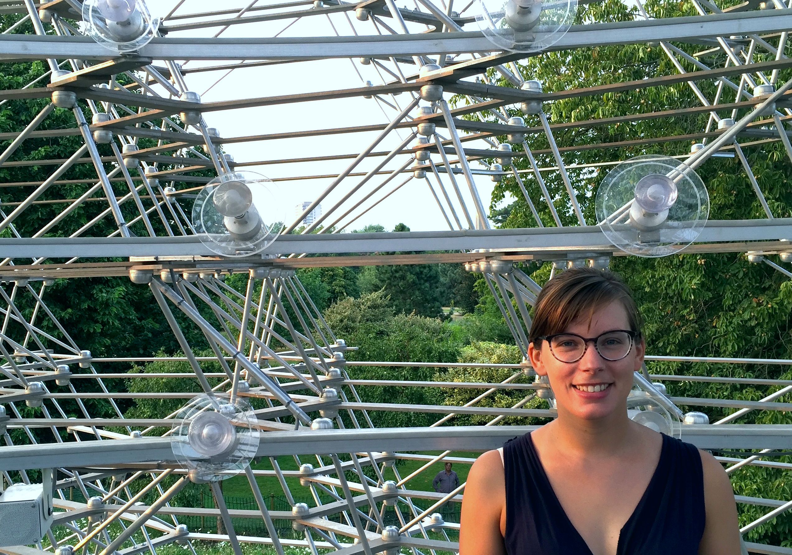Carole is a co-investigator on our BIOTA Project, investigating interactions between biodiversity change and agriculture. Carole is based at UCL's Institute for Sustainable Resources.
Jeremy Kerr
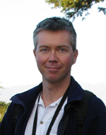Jeremy and I have collaborated for a few years, on a project investigating the impacts of land-use change and climate change on bumblebee biodiversity in North America and Europe.
Ben Collen
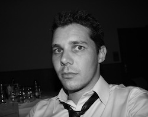Ben was the Principal Investigator on the Dynamics of African Ecosystems Project, which I am now leading. Tragically, Ben died of bone cancer in May 2018. Please consider making a donation for research on this under-studied form of cancer.
Nick Isaac
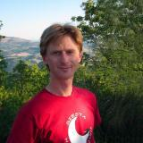Nick leads the Global Insect Threat-Response Synthesis (GLITRS) Project, which is investigating the drivers and consequences of global insect declines.
Barbara Adolph
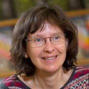Barbara leads the SENTINEL Project, which is exploring the social and environmental trade-offs of agriculture in Zambia, Ethiopia and Ghana.
Neil Burgess
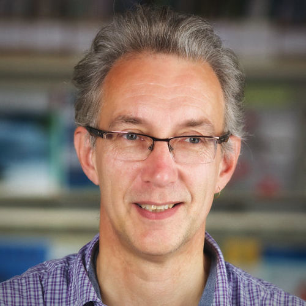Neil leads the TRADE Hub, which is exploring the environmental impacts of international trade.
James Rosindell
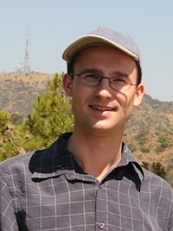James leads a project, in which we are combining the strengths of Ecological Neutral Theory and the Madingley Model, to make better predictions of global biodiversity change. James is based at Imperial College London.
Mike Harfoot
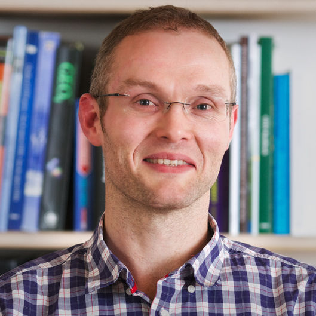Mike and I collaborate on the Madingley Model, and also on the TRADE Hub. Mike is based at the United Nations Environment Programme World Conservation Monitoring Centre in Cambridge.
Sam Hill

Sam and I collaborate together on the PREDICTS Project, and on the TRADE Hub. Sam is based at the United Nations Environment Programme World Conservation Monitoring Centre in Cambridge.
Derek Tittensor
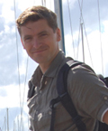Derek and I collaborate on the development of the Madingley Model. Derek is based at Dalhousie University in Halifax, Canada.